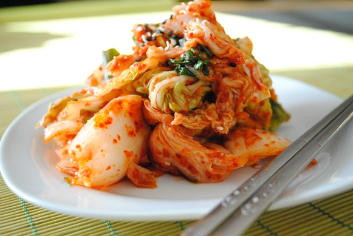
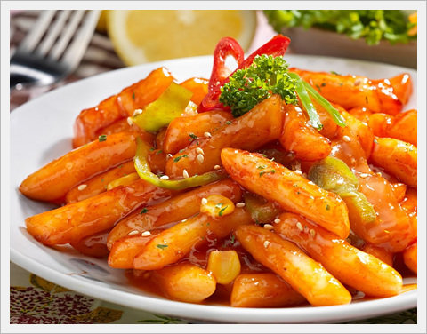

Experience Seoul, KOREA

Visit Seoul
Information on Seoul
Travel to Seoul
My Favorites
Welcome to the site where you can find plentiful information on traveling to Seoul, South Korea. This guide is going to help you learn about some of the tourist attractions and foods that are essential in Seoul. If you are traveling to Seoul for the first time or just want to learn more about the city, I highly recommend you giving your contact information and we'll get in touch later. I hope you find Seoul as beautiful and great as I do. From its rich history to its modern popularity of KPOP, Seoul is a great place to explore and have a great time.
 
SOME HELPFUL LINKS!
Trip AdvisorVisit Seoul
Information on Seoul
Travel to Seoul
VISIT SEOUL
Tweets by @VisitSeoul